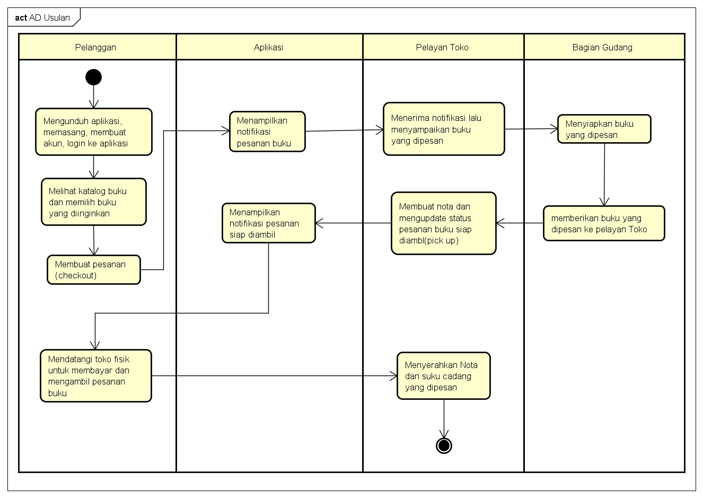
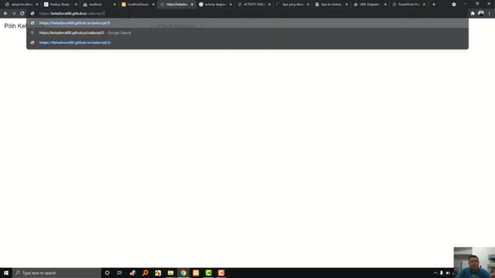
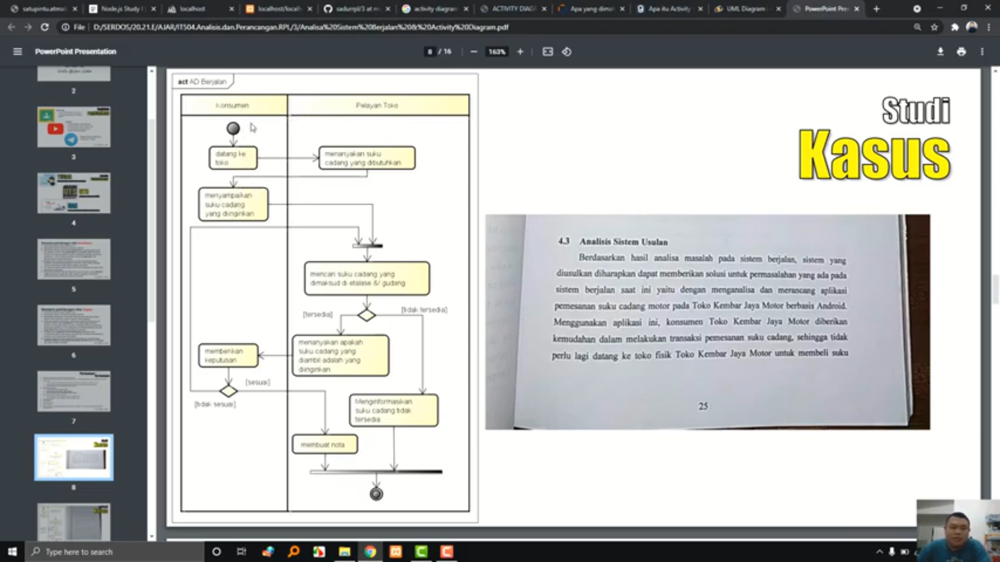
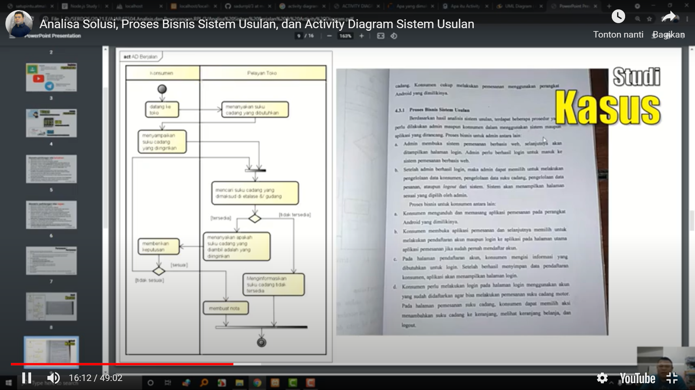
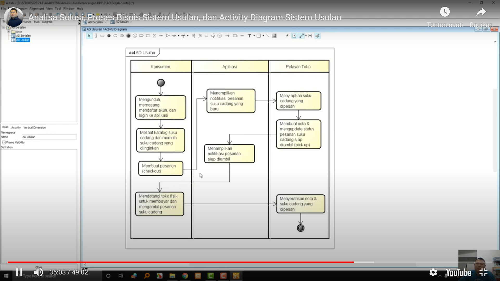
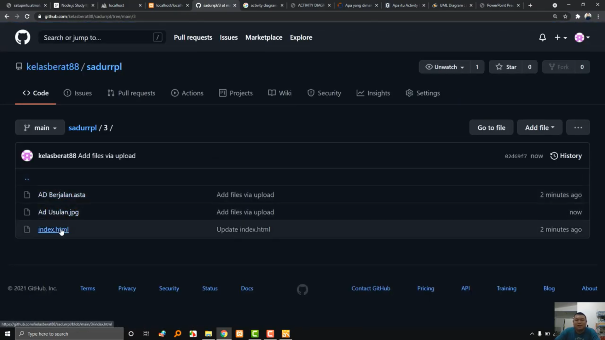

Selamat pagi Pak :)
Nama: Livren Sandi
NIM: 1811500097
Kelompok: TI6A
hasil saya menyadur pada pertemuan ke 3:
1) Mengingat kembali cara upload saduran ke github
2) memahami tentang analisa sistem usulan
(analisa sistem usulan dapat memberi dampak ke pelanggan dan toko karena dapat mempermudah tanpa harus datang ke toko
dapat melakukan pemesanan barang serta menghemat biaya pelanggan tanpa harus datang ketika tau barang tidak ada)
3) Memahami proses analisa sistem usulan
4) Activity diagram digunakan untuk menggambarkan proses bisnis, bukan detail pada suatu halaman
Gambar Latihan Astah:

Download file latihan astah : Download




